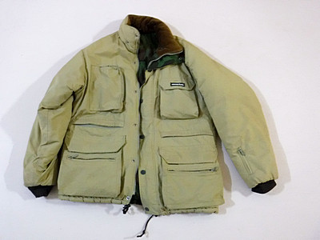
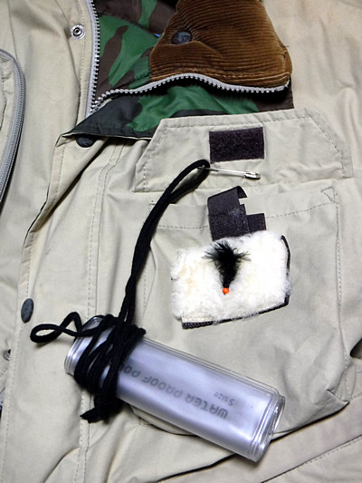
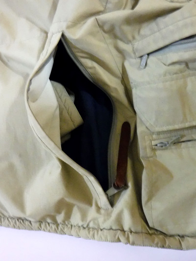
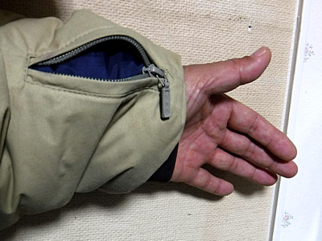
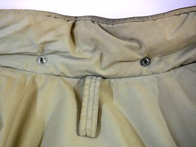
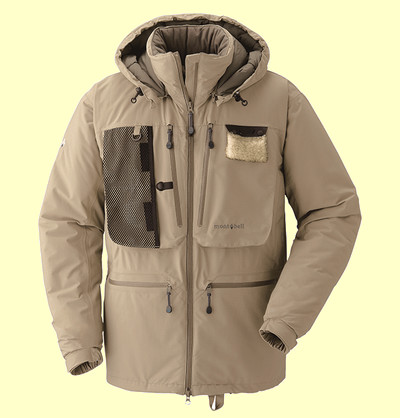
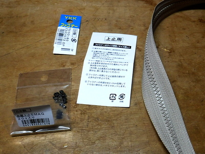
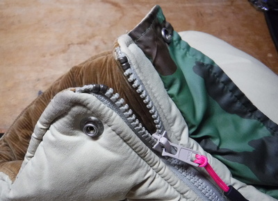

私のお気に入り
釣りの衣類 モンベル社 防寒フィッシングジャケット
このモンベル社の防寒フィッシングジャケットは、僕が友人の川本君と、冬の管理釣り場通いをしていた頃に購入した製品である。おそらく1993年頃だったと思う。価格ははっきりと覚えていないが、２万円ほどではなかったか.....。

渓流シーズンが終わった10月から３月頃までは、正月の二日から管理釣り場に行っていたほど入れあげていた僕の体を、しっかりと寒さから守ってくれて、大活躍していた。また、当時少しだけかじった冬場のバードウォッチングにも重宝した。
良いところ
- 中綿が十分入っておりとにかく暖かい。中綿の種類はわからないが、シンシュレートではなさそう。着た感じはちょっとモコモコするが、暖かいので問題なし。冬場はこれを着ればバイクで釣り場まで行く時もまったく寒さを感じることはなく、そのまま釣りを始められるのでとても便利である。
- 生地が丈夫で防風効果あり。耐水性は未知数だが、自分でモンベルの防水スプレーをまんべんなく吹きつけたので、それなりの撥水効果を確保できた。
- 釣り、特にフライフィッシングの経験豊富な方がデザインしたと思われ、便利な位置に適当な大きさのポケットがたくさんある。
- 左右の身頃：胸に縦型、中央に内部型、下部にフラップ付きの大型、その表側にはジッパーの小型ポケットが設けられている。。左胸のポケットにはムートンのフライパッチが収納されており、取り出してから固定しておけるマジックテープも付いている。このデザインには感動した。

左胸のポケットにはムートンのフライパッチ
黒色のヒモで結わえてあるのは携帯電話用の防水ケース
上側に見える茶色の部分はコーデュロイの襟当て - 背面：中央にサイドジッパーの大型

背面の大型ポケット - 左腕の袖：小型のジッパータイプポケット。小技的なポケットだが、これが大変便利で、車やバイクを降りて釣り場に向かう際にキーを入れておくのに役立つ。右手で開閉し楽に入れられるし、出す時にもあちこちまさぐって探さなくても一発でキーの場所がわかる。ポケットがたくさん付いたベストやジャケットだと、何がどこにあるのかわからなくなる時が往々にしてあるが、重要な鍵や小物はここに入れておけば大丈夫！

左袖の小型のジッパータイプポケット - 裏面：身頃両サイドにフラップ付きポケット、中央部に使い捨てカイロがちょうど収まる大きさのポケット有り。
- 左右の身頃：胸に縦型、中央に内部型、下部にフラップ付きの大型、その表側にはジッパーの小型ポケットが設けられている。。左胸のポケットにはムートンのフライパッチが収納されており、取り出してから固定しておけるマジックテープも付いている。このデザインには感動した。
- リバーシブル、裏地は迷彩柄となっている。バードウォッチングの時には大いに役立った。
- 背面首元にはしっかり、布製のループが設けられている。ちょっとしたことだが、釣り人にとっては大きなアドバンテージ。ランディングネットリトリーバーをこのループに装着できる。

ネットリトリーバー用のループ - 幅広い襟元にはコーデュロイのあて布が施されており、防寒に役立っている。
- 身頃の下端にはドローコードがあり、締めることでウェストからの風の侵入を防いでくれる。
- フードはボタンで取り外し可能なので、お好みの帽子をかぶることができる。
このジャケットの現行モデル、クリークジャケットは、2019/12現在、モンベル社のウェブサイトに載っていない。ひょっとして廃版になってしまったのだろうか？

画像はモンベル社ウェブサイトより引用
長い間生産されてきた良いジャケットだと思うので、これからも作り続けて欲しいと願う。モンベル社は釣りに関連した良い製品をたくさん開発・販売しているが、製品が廃版となるケースが多いように思われ、そこが残念な点である。
今年、2019年の11月から12月は、取り憑かれたように本流のニゴイとコイを追いかけていたので、この防寒フィッシングジャケットが本当に役立った。良いものは永く使えるなぁと改めて感心した。これからも大事に、ハードに使ってゆきたい。
追記
2021年2月のニゴイ釣りから帰ってきて、ジャケットを脱ごうとしたらファスナーが壊れた。金属疲労でスライダー金具が折れ、ツマミが外れてしまった。
こりゃ手芸用品店で新しいファスナーを買い、交換だけをリフォーム店に頼もうと思い、ネットで調べた市内の数件に問い合わせた。A店では税込み 5,500円、B店では税込み 7,150円などと言われて青ざめる。（笑）
C店の店員さんが親切で、スライダー金具だけ交換できるんじゃないですかね？ と教えてくれたので、金具の裏に刻印された品番で検索してみた。YKK VISLON 5VS と記されている。便利な世の中になったもので、修理の一部始終が解説されている「プラスチック製ジッパーのスライダーの交換方法」という動画を発見。さらにアマゾンでスライダー金具と留め金具を売っていることもわかった。しかし、送料が意外と高い。（泣）
気を取り直して行きつけの手芸用品店に行き、スライダー金具だけ売っていないか訊ねたら、金具だけでは売ってなかった。しかし、短いファスナー布地付きの製品があったので、その金具を取ってジャケットに転用するつもりで購入。

帰宅後、PCで動画を見ながら、おぼつかない手つきで挑戦した。ちょっとへまをして手間取ったが、無事修理が成功し、元どおりに着られるようになった。しめて材料費 457円。

今年の秋からまたこれを着て、本流のニゴイと遊んでもらうのだ。
私のお気に入り 目次へ
サイトマップ
ホームへ
お問い合わせ